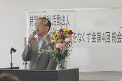
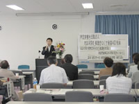

| 【日 時】 |
６月28日(木)10:45～12:30 |
【場 所】 |
埼玉会館3Ｃ会議室 |
| 【出席者】 |
61人(表決権総数37票中／実出席10人、委任表決２、書面議決18) |
１．あいさつ
 なくす会を代表して、石川祐司理事長より「最近の英会話学校や食品の偽装事件など、広義の消費者被害という意味では、社会システムの向上強化を図ることが必要。６月に消費者団体訴訟制度が施行され、なくす会でも適格消費者団体として認定を受けられるよう準備中。要件の会員100人に向けご協力をお願いしたい」とのあいさつがありました。
続いて、埼玉県県民・消費生活課副課長の根岸秀夫様よりごあいさつをいただきました。
２．議案審議
伊藤恭一専務理事より、第１号議案「2006年度の事業と決算承認の件」、第２号議案「定款の一部改定の件」、第３号議案「役員補充選挙の件」が一括して提案され、針生圭吉監事から監査報告がありました。議案ごとに採決が行われ、全ての議案が全会一致で承認されました。
３．記念講演
「全国の適格消費者団体をめざす組織の状況と消費者機構日本の取り組み」
講師：磯辺 浩一氏（消費者機構日本理事・事務局長）
＜概要＞
全国で８団体が適格消費者団体をめざしています。６月７日現在で届け出たのは、２団体（消費者機構日本、消費者支援機構関西）、今後申請を予定しているのが６団体で、他に岡山、北海道、沖縄でも検討の動きがあります。
消費者機構日本では、消費者被害情報収集として電話「トラブル110番」を２回実施したほか、是正申し入れが11件、公開学習会などを行っています。
特別報告として、池本誠司氏（埼玉消費者被害をなくす会副理事長・弁護士）より「割賦販売法の課題」が話されました。
|